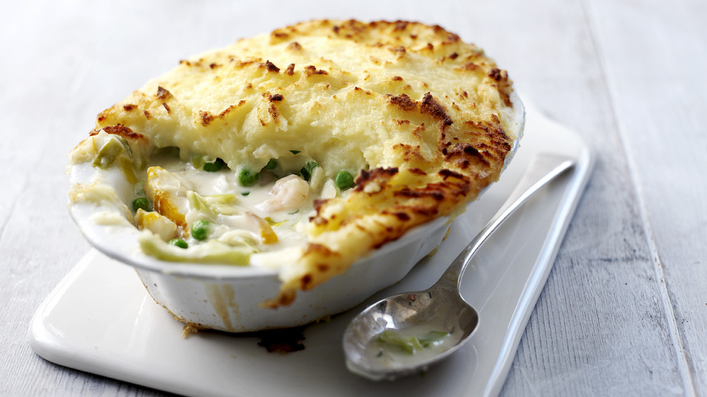

Fish Pie
A simple fish pie recipe that’s quick and easy to prepare. Portion into ramekins and freeze for quick toddler meals or cook in a big dish for the perfect family supper!

The whole fish pie thing is one of the most homely, comforting and moreish dinners I can think of. This is a cracking recipe which does wonders for appetite.
The preparation time is 15 minutes and the cooking time is 45 minutes.
Ingredients
- 1kg Maris Piper potatoes, peeled and halved.
- 400ml milk, plus a splash.
- 25g butter, plus a knob.
- 25g plain flour.
- 4 spring onions, finely sliced.
- 1 x pack fish pie mix (cod, salmon, smoked haddock etc, weight around 320g to 400g depending on pack size).
- 1 tsp Dijon or English mustard.
- 15g or small bunch chives, finely snipped.
- Handful frozen sweetcorn.
- Handful frozen petits pois.
- Handful grated cheddar.
Once the ingredients have been prepared you are ready to move on to the cooking.
Method
- Heat the oven to 200C/fan 180C/gas mark 6.
- Put 1kg potatoes, peeled and halved, in a saucepan and pour over enough water to cover them. Bring to the boil and then simmer until tender.
- When cooked, drain thoroughly and mash with a splash of milk and a knob of butter. Season with ground black pepper.
- Put 25g butter, 25g plain flour and 4 finely sliced spring onions in another pan and heat gently until the butter has melted, stirring regularly. Cook for 1 to 2 minutes.
- Gradually whisk in 400ml milk using a balloon whisk if you have one. Bring to the boil, stirring to avoid any lumps and sticking at the bottom of the pan. Cook for 3 to 4 minutes until thickened.
- Take off the heat and stir in 320g-400g mixed fish, 1 tsp Dijon or English mustard, a small bunch of finely snipped chives, handful of sweetcorn and handful of petits pois. Spoon into an ovenproof dish or 6 to 8 ramekins.
- Spoon the potato on top and sprinkle with a handful of grated cheddar cheese.
- Pop in the oven for 20 to 25 mins or until golden and bubbling at the edges. Alternatively, cover and freeze the pie or mini pies for another time.